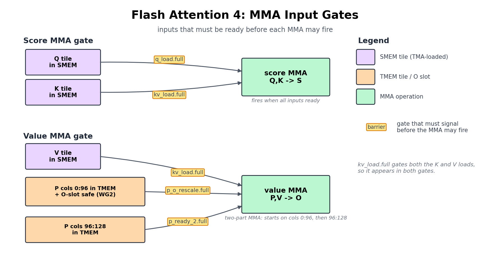

FlashAttention 4#
概述
Attention 运行两个 MMA，softmax 楔入它们之间，因此它不能像 GEMM 那样重复一个 MMA。
kernel 由第一部分中的硬件原语（TMA、
tcgen05、TMEM、barrier）和第三部分中的 GEMM 技术与 warp 角色、在线 softmax 重新缩放组成， causal masking 和 GQA。
Attention 是决定 Transformer 是否运行的 kernel，它也是我们迄今为止构建的所有内容最终必须协同工作的地方。我们为 GEMM 组装的每件作品都在这里：TMA tile 运动、tcgen05 MMA、TMEM、warpgroup 寄存器 tile 和显式 barrier。
挑战在于，Attention 不是 MMA 的重复。它是两个 MMA，它们之间夹杂着实际工作：online softmax、causal masking，以及使较早和较晚的区块保持相同比例的重新缩放。
中间阶段就是新困难所在。普通的 matmul 只会添加到它的累加器中；当新的键和值流入时，Attention 必须重新审视和重新调整已经计算出的结果。 softmax 工作本身也在两个 Tensor Core MMA 之间的 CUDA cores 上运行，因此指数和行式缩减直接位于关键路径上。
这就是为什么如此多的 Attention 优化实际上是 softmax 优化：重新制定 exp，并将 softmax 与 MMA 重叠，而不是停滞不前。
本章的目标不是从头开始重新推导 FlashAttention。我们将保留足够的算法以使 kernel 可读，然后把重点放在真正新的部分上：该算法如何变成 TIRx。
最清晰的方法是跟随单个 tile 流经 kernel。 Q、K 和 V 作为输入 tile 输入，从 GMEM 加载到 SMEM。分数 MMA 将 Q 和 K 相乘，形成 TMEM 中的分数 tile S。 Softmax 将S变成分子 tileP，并且值 MMA 组合P和V来更新输出累加器O。
到目前为止，这看起来像是两个 matmul 粘在一起，但 GEMM 从未处理过一个问题：每当正在运行的 softmax 最大值发生变化时，迄今为止累积的 O 突然处于错误的范围。在下一个值 MMA 可以安全地添加到其中之前，必须重新调整它。下面的部分首先跟踪此路径，然后才显示 TIRx 如何将每个级传递给 warpgroup 并将各个级连接在一起。
算法形态#
在我们将 tile 放入内存之前，我们需要这些 tile 所服务的算法。对于一个查询块，FlashAttention 计算：
从字面上看，公式说的是形成满分矩阵S = QKᵀ，softmax，然后乘以V。这是我们无法使用的一种方法，因为完整的 S 非常巨大。在 seq=4096 时，每个头大约容纳 16M 个元素，fp32 中大约有 64 MB，这比 SMEM 或单个 128×512 TMEM 区域大几个数量级。芯片上根本没有地方可以放置它。 FlashAttention 的答案是根本不实现 S。相反，它以块的形式传输 K/V 并携带三个每行运行状态，总结了迄今为止所看到的所有内容：
row_max：迄今为止看到的最高分数。row_sum：softmax 的运行分母。O：运行输出累加器。
当新块到达时，流式更新可以保持这些状态的正确性。微妙之处在于，每次我们处理一个块时，运行最大值可能会上升，一旦上升，我们在旧最大值下计算的所有内容现在都处于错误的范围内。因此，在添加新的贡献之前，我们首先将旧状态拉回新的规模：
S = Q_block @ K_block.T
m_new = max(row_max, rowmax(S))
scale = exp((row_max - m_new) / sqrt(d))
P = exp((S - m_new) / sqrt(d))
row_sum = row_sum * scale + rowsum(P)
O = O * scale + P @ V_block
row_max = m_new
单个 scale 因子在这里发挥双重作用：它重新调整运行分母和运行输出，以便来自较早和较晚块的贡献最终以共同的比例进行测量。
上面的伪代码是用自然的 exp 和显式的 /sqrt(d) 编写的，因为这样最容易阅读，但 kernel 采用更便宜的路线。它将 1/sqrt(d) 和 log2(e) 折叠成一个常数 scale_log2 = log2(e)/sqrt(d)，并使用身份 exp(x/sqrt(d)) = exp2(x · scale_log2) 使用硬件 exp2 的原始分数评估每个指数。动机很简单，exp2 在该硬件上比自然的 exp 更快。
在我们继续之前，有一点值得确定：这里的 P 不是最终的归一化 Attention 矩阵。它只是当前 K/V 块的 softmax 分子。标准化被故意推迟，并且只有在最后一个块之后，kernel 才会写入 O / row_sum。
对于 TIRx，了解算法计算的内容只是问题的一半。另一半是 kernel 运行时“每个 tile 所在的位置”，因为这决定了 layout 和 barrier 代码。 S、P、O都是 tile 值，每一个都有一个家：
S是分数 tile。分数 MMA 将其写入 TMEM。P是 softmax 分子 tile。 Softmax 将 TMEM 中的S读入寄存器，计算P = exp((S - m_new) / sqrt(d))，并将P写回 TMEM。O是输出累加器块。值 MMA 从 TMEM 中读取P，从 SMEM 中读取V，然后累加到 TMEM 中的O中。
我们之前标记的重缩放也是一个平铺操作，而不是标量簿记：当 row_max 更改时，旧的 O 会从 TMEM 中读取，在寄存器中相乘，并在下一个值 MMA 累积到其中之前写回 TMEM。后面的每个部分都遵循相同的结构：tile 放置、硬件路径以及证明下一个消费者可以运行的 barrier。
平铺图元图#
有了运行状态及其所在位置，我们就可以将算法布置为具体的 tile 移动序列。对于一个 K/V 块，kernel 从上到下走这条平铺路径：
Q, K, V in GMEM
-> Q, K, V in SMEM by TMA load
-> S in TMEM by score MMA: QK^T
-> P in TMEM by softmax numerator: TMEM -> RF -> TMEM
-> O in TMEM by value MMA: P V
-> O in GMEM by normalization, SMEM staging, and TMA store
与 GEMM 的差异归结为一行。 GEMM 是一条重复的 MMA 链； FA4 有两个 MMA 相，softmax 位于链的中间。接下来的几乎所有其他事情都是这一额外阶段的结果。
如果我们将短路径扩展为显式的生产者-消费者边缘，我们将得到完整的图：
阶段 |
平铺移动或计算 |
TIRx 原语 |
硬件路径 |
|---|---|---|---|
负载 Q/K/V |
GMEM tile -> SMEM tile |
|
TMA load |
分数 MMA |
SMEM 中的 Q 和 SMEM 中的 K -> TMEM 中的分数块 |
|
|
Softmax 读取 |
|
|
|
Softmax 写入 |
寄存器中的分子块 |
|
TMEM store，其次是 |
值 MMA |
TMEM 中的 |
|
|
更正 |
|
TMEM 回读、寄存器乘法、TMEM 存储 |
|
epilogue |
TMEM 中的最终 |
TMEM 回读、 |
|
新行是 softmax 和更正。两者都会添加 TMEM -> 寄存器 -> TMEM 流量，并且都会在分数 MMA 和值 MMA 之间创建额外的切换。
尝试与您的代理一起：要求它仅跟踪上面的短路径。对于每个箭头，命名生产者阶段、消费者阶段、源 tile、目标 tile 和硬件路径。然后询问 GEMM 章节中不存在哪些箭头。
扭曲角色和范围#
数据路径确定后，自然的下一个问题是谁实际运行每个阶段。这里的每个 CTA 总共有 4 个 warpgroups、512 个 threads，它们的划分不是根据它们接触的数据，而是根据 warpgroup 所做的“什么样的工作”：
WG3 驱动硬件引擎：TMA load、MMA 和 TMA store。
WG0、WG1 和 WG2 执行这些引擎调用之间发生的大量寄存器数学运算：softmax、校正和 epilogue。
确切的角色表是：
所有者 |
角色 |
它的作用 |
|---|---|---|
WG3、warp 1 |
TMA load |
将 Q、K 和 V 切片从 GMEM 加载到 SMEM |
WG3、warp 0 |
MMA |
问题得分为 MMA 且价值为 MMA |
WG3、warp 2 |
TMA store |
存储从 SMEM 到 GMEM 的最终 O 切片 |
工作组 0 |
Q 0 级的 Softmax |
从 TMEM 读取 S，计算 P，将 P 写入 TMEM |
工作组 1 |
Q 第 1 阶段的 Softmax |
第二个 Q pipeline 级的工作相同 |
工作组 2 |
更正和 epilogue |
在 TMEM 中重新缩放 O，标准化，分级输出 |
人们很容易将“两个 Q 阶段”误读为两个 Attention 头，但事实并非如此。它们只是 Q pipeline 中的两个插槽，WG0 拥有一个插槽，WG1 拥有另一个插槽，因此两个 Q 块可以同时飞行。这就是 softmax 作品出现两次的原因，一次在 WG0 上，一次在 WG1 上。
代码用符号坐标挑选出这些角色：
wg_id = T.warpgroup_id([4])
warp_id = T.warp_id_in_wg([4])
当你阅读 kernel 时，首先找到角色分支。它告诉您哪个团队拥有嵌套在其中的每个 tile primitive。
WG3 warp 1 启动 TMA load 命令。一个选定的 lane 发出副本，TMA 引擎移动 tile。
WG3 warp 0 发出
tcgen05.mma指令。WG0 和 WG1 在完整的 warpgroup scope 下运行 softmax。
WG2 在完整的 warpgroup scope 下运行校正和 epilogue 工作。
一种不对称性最终塑造了整个 barrier 图：每个 MMA，无论是分数还是价值，都仅来自 WG3 warp 0。 WG0 和 WG1 根本不会发出 MMA。它们仅消耗分数 tile，运行 softmax，并将 P 写回 TMEM。
这种分离正是 softmax 周围需要 barrier 的原因。 s_ready 将分数块从 MMA warp 传递到 softmax； p_o_rescale 带有 P 和 O 插槽，该插槽对于值 MMA 来说是安全的，或者已经重新缩放，或者因为不需要重新缩放而被释放。在本章的其余部分，我们将继续讨论这两个名字。
阅读片段#
本章中的片段摘自flash_attention4.py，因此它们不可避免地引用了我们不复制的 kernel 部分中定义的名称。自描述的（wg_id、warp_id、BLK_M/BLK_N、HEAD_DIM、kv_stage、SMEM_PIPE_DEPTH_* / TMEM_PIPE_DEPTH 深度、should_accumulate 和 CTA_GROUP（此处为 1））我们在下面首先介绍它们。其余的在此处的表格中仅一行注释，因此当片段将一个不熟悉的名称放在您面前时，您可以在某个地方查看：
姓名 |
意义 |
|---|---|
|
Q pipeline 级，0 或 1，i.e。其中 Q tile 槽（ |
|
TMEM 列中的分数/输出 tile 宽度 (128) |
|
MMA |
|
值-MMA 时间表的分割点（参见两个 MMA 阶段）；第一个值 MMA 涵盖列 |
|
WG2 每行标志：旧的 |
|
小行最大变化的跳过阈值；当前的 kernel 使用 |
|
softmax 以 log2 为单位的刻度 |
|
每行重新缩放因子 softmax 通过 SMEM 邮箱传递到 WG2 |
|
正在读取/写入的 32 宽 softmax 块的列范围 |
MMA 的两个阶段#
对于每个流式传输的 K/V 块，FlashAttention 运行两个 MMA 阶段，并通过 softmax 桥接它们：
Q, K -> score MMA -> S
S -> softmax -> P
P, V -> value MMA -> O
可以将其视为连续三个生产者的 pipeline。第一个 MMA 产生 Attention 分数 S，softmax 将 S 转换为分子 P，第二个 MMA 消耗 P 来更新输出累加器O。一旦每个 K/V tile 都有发言权，row_sum 的标准化就会被保留到 epilogue。
下面的每个 tile 操作都获得与我们在 GEMM 步骤中使用的相同的 scope / layout / dispatch 卡，还有一个额外的行 Handoff，该行将命名将 tile 传递给下一个角色的 barrier(s)。
计算代码从不使用原始 TMEM 列号。相反，kernel 将其单个 TMEM 分配划分为每阶段视图（S_region、P_region、O_region），并按 pipeline 阶段对它们进行索引（S_region[q_stage]、O_region[i_q]、P_region[i_q, 0:K_SPLIT]）。这些视图在 TMEM layout 和重用 部分中使用 T.TMEMStages 定义；现在，将每个区域视为同一物理 TMEM 的命名切片就足够了。
分数 MMA#
两个阶段中的第一个阶段是分数 MMA，即打开每次 K/V 迭代的 matmul。它计算：
并将 128 x 128 分数块写入 TMEM：
Tx.warp.gemm_async(
S_region[q_stage],
Q_smem[q_stage, 0:BLK_M, 0:HEAD_DIM],
K_smem[kv_stage, 0:BLK_N, 0:HEAD_DIM],
dispatch="tcgen05",
cta_group=CTA_GROUP,
)
if T.ptx.elect_sync():
s_ready.arrive(q_stage)
我们可以问 GEMM 章节对每个 tile 操作提出的四个相同问题：谁运行它，tile 位于哪里，它如何调度，以及它如何移交：
tile 原始读数：分数 MMA
范围：WG3 warp 0 发布；一条选定的 lane 到达
s_ready。layout：SMEM 中的 Q、K → TMEM 中的
S(S_region[q_stage])。调度：
tcgen05。切换：
s_ready（→ softmax）。
到达 s_ready 的单个选定的 thread 是整个切换。它宣布此乐谱 tile 已完成，并且 softmax warpgroup 现在可以免费阅读。
MMA 之间的 Softmax#
在两个 MMA 之间坐落着 softmax，该阶段将分数 tile S 转换为分子 tile P。其读出卡为：
平铺原始读数：Softmax
范围：WG0（Q 阶段 0）/WG1（Q 阶段 1），完整 warpgroup。
layout：TMEM 中的
S→ 寄存器 → fp16 TMEM 中的P(P_region[wg_id])。调度：
tcgen05.ld读取，TMEM 存储写入；它们之间的寄存器中的按行数学。切换：等待
s_ready；到达p_o_rescale（前 96 列）和p_ready_2（后 32 列）。
这一阶段是根本没有 GEMM 对应阶段的阶段。 WG0/WG1 等待分数块到达 s_ready，然后从 TMEM 中一次读取一个寄存器大小的块：
Tx.copy_async(
s_chunk[:, chunk_start : chunk_end],
S_region[wg_id, chunk_start : chunk_end],
)
这是在 warpgroup scope 下读取的 TMEM 到寄存器 tile。现在分数已存放在寄存器中，softmax warpgroup 按顺序执行三件事：
计算行最大值和行总和，
计算 softmax 分子 tile
P，将
P写回 TMEM 作为 fp16。
最后一步看起来像：
Tx.copy_async(
P_region[wg_id, p_start : p_end],
p_chunk[:, p_start : p_end],
)
当我们刚刚完成寄存器中的计算时，为什么要将 P 写回到 TMEM 呢？因为值 MMA 需要 P 作为平铺操作数，并且 MMA 无法将分散的每个 thread 标量寄存器读取为矩阵。此 kernel 中 P 的 MMA 可读形式是 P_region，是 fp16 TMEM 别名 tmem_as_f16 的视图。所以写回并不是多余的动作；这使得 P 成为下一个 MMA 可以实际消耗的唯一形状。
值 MMA#
第二阶段，即结束每个 K/V 迭代的阶段，是值 MMA。它计算：
当 MMA 运行时，O 已经进入当前 K/V 块的正确状态，在第一个块上初始化，在后面的块上重新缩放，因此 MMA 所要做的就是累加。它与 GEMM 的区别在于操作数所在的位置：A 操作数是 TMEM 中的 P，B 操作数是 SMEM 中的 V，累加器 O 位于 TMEM 以及：
# First sub-MMA: columns 0:K_SPLIT (the first 96 of P / rows of V).
Tx.warp.gemm_async(
O_region[i_q],
P_region[i_q, 0:K_SPLIT],
V_smem[kv_stage, 0:K_SPLIT, 0:HEAD_DIM],
transB=True,
accum=should_accumulate,
dispatch="tcgen05",
cta_group=CTA_GROUP,
)
# The second sub-MMA (same form, accum=True, gated on p_ready_2) covers the
# remaining columns K_SPLIT:BLK_N.
tile 原始读数：值 MMA
范围：WG3 warp 0。
layout：TMEM 中的
P+ SMEM 中的 V → TMEM 中的O(O_region[i_q])。调度：带有 TMEM 操作数的
tcgen05。切换：等待
p_o_rescale、p_ready_2、kv_load.full；到达o_ready（→ epilogue）。
此操作数放置是两个 MMA 之间的硬件差异：
分数 MMA 从 SMEM 读取两个操作数：Q 和 K。
值 MMA 从 TMEM 读取一个操作数
P。值 MMA 从 SMEM 读取另一个操作数 V。
结果累加到 TMEM 中的
O中。
accum=should_accumulate 标志是实现算法中的“初始化或添加”选择的标志：它在查询块的第一个 K/V tile 上为 false，而在之后的每个 tile 上为 true。
您可能还注意到，值 MMA 不是一次性运行的，而是拆分为 96 + 32 计划：
Softmax 将
P写入四个 32 列的块中。一旦前三个块准备就绪，值 MMA 就会从
P的前 96 列和V的匹配行开始。最后 32 列等待
p_ready_2。第二个 MMA 消耗最后的块并完成 tile。
拆分的原因是为了让 Tensor Core 保持忙碌。将值 MMA 作为单个指令运行，整个阶段将停止，直到所有四个 32 列 P 块都已求幂并存储。通过立即触发前三个块，kernel 将最后一个块的 exp 和 TMEM 写入与已在运行中的 96 宽 MMA 重叠，将原本的空闲时间转化为有用的工作。
TMEM layout 和重用#
所有 S、P 和 O 都必须共享一个 128 x 512 TMEM 分配，而它们的打包方式正是 barrier 和 layout 在此过程中密不可分的原因。 kernel：
下图显示了直接打包：分数槽、分子槽和输出槽都共享一个 TMEM 分配，因此 barrier 协议使重用合法。

该图读作一组 tile 槽：
分数槽包含
S = QK^T。分子槽在 softmax 求幂步骤之后保存
P区块。输出插槽容纳 fp32
O累加器。
这些不是独立的缓冲区。它们是“相同”分配的区域，共享不是一种风格选择，而是一种强制选择。对于 Q pipeline 深度 2，两个 S 插槽（2 × MMA_N = 256 列）和两个 O 插槽（2 × MMA_N = 256 列）已占全部 512 个 fp32 列。 P 没有剩余任何内容，因此 P 别无选择，只能通过更窄的 fp16 视图为相同的字节别名。这是安全的唯一原因是，每个区域在其前一个消费者完成后都会严格重用，而这个时间正是 barrier 所保证的。因此，在 FA4 中，barrier 不仅仅是调度；还有调度。它们首先使 layout 合法。
混叠技巧是通过 T.TMEMPool 设置的。 kernel 采用一个 fp32 视图 (tmem) 作为分数和输出累加器，然后将池基数倒回到 0，并在相同的物理字节上采用第二个 fp16 视图 (tmem_as_f16)：
tmem_pool = T.TMEMPool(pool, total_cols=N_COLS_TMEM, cta_group=CTA_GROUP, tmem_addr=tmem_addr)
tmem = tmem_pool.alloc((128, N_COLS_TMEM), "float32")
tmem_pool.move_base_to(0)
tmem_as_f16 = tmem_pool.alloc((128, N_COLS_TMEM * 2), "float16")
tmem_pool.commit()
由于 fp16 元素的宽度是一半，因此 fp16 视图在相同字节上公开两倍数量的可索引列，而这正是 P 所在的空间，而 fp32 layout 没有空间。有了这两个视图，kernel 就可以将 S、P 和 O 插槽作为 T.TMEMStages 的分阶段区域进行划分，这样就可以按 pipeline 阶段而不是按原始列来计算代码索引：
S_region = T.TMEMStages(tmem, col_start=0, width=MMA_N, stages=SMEM_PIPE_DEPTH_Q, stride=MMA_N)
O_region = T.TMEMStages(tmem, col_start=MMA_N * SMEM_PIPE_DEPTH_Q, width=MMA_N, stages=SMEM_PIPE_DEPTH_Q, stride=MMA_N)
P_region = T.TMEMStages(tmem_as_f16, col_start=MMA_N, width=BLK_N, stages=SMEM_PIPE_DEPTH_Q, stride=MMA_N * 2)
P_region 步幅中的 * 2 是别名明显泄漏到代码中的地方。 S_region 和 O_region 在 fp32 tmem 列中测量，而 P_region 在 fp16 tmem_as_f16 列中测量，其宽度为一半，因此舞台到舞台的移动需要双倍的步幅才能着陆在相同的物理字节上。不过，一旦定义了区域，计算代码就会保持干净：它写入 S_region[q_stage]，读取 S_region[wg_id, ...]，写入 P_region[wg_id, ...]，然后累积到 O_region[i_q]，从未触及原始列索引。
与您的代理一起尝试：要求其解释此 FA4 kernel 中的 fp32 (tmem) 和 fp16 (tmem_as_f16) 视图。哪些物理 TMEM 区域包含 S、P 和 O，为什么 P_region 的步幅使用 MMA_N * 2？将重用问题保存到下一节：在 barrier 表之后，检查哪些消费者必须完成才能重用每个区域。
barrier 如何连接角色#
这是 kernel 中最难的部分，因此循序渐进是值得的。从沿着主计算路径移动数据的少数 barrier 开始，并将其他所有内容视为您可以稍后查找的簿记。数据就绪交接是：
切换 |
意义 |
|---|---|
TMA load -> 分数/值 MMA |
Q、K 或 V 已到达 SMEM，可以喂食 MMA |
分数 MMA -> softmax |
|
softmax/校正 -> 值 MMA |
|
值 MMA -> epilogue |
最终的 |
epilogue -> TMA store |
|
不在该列表中的所有内容都是 pipeline 簿记：释放 SMEM、TMEM 或暂存缓冲区的 barrier，以便另一个角色可以重用它。有用的是，每个 barrier，无论它携带数据还是仅携带簿记，都以相同的方式读取，就像平铺切换一样。您询问谁生成了数据，谁使用了数据，以及一旦数据完成，哪个缓冲区就会空闲。
下图将这些切换折叠为两个 MMA 阶段的确切就绪门：分数 MMA 等待什么，以及值 MMA 在累积之前必须等待什么。

将此图视为一组正确性门而不是时间表。它回答了“在 MMA 触发之前必须满足什么条件”，并且没有提及时间。分数 MMA 在 SMEM 中等待 Q 和 K，然后产生S。值 MMA 同时等待三件事：SMEM 中的 V、softmax 中的 P tile 以及 WG2 已释放或重新缩放的 O 插槽。 softmax 到值的门被分割的原因是我们已经遇到的：一旦 P 的前 96 列到位，值 MMA 就可以开始，并且 p_ready_2 释放最后 32 列。
有一种交接不适合 tile 准备模具：softmax 至校正边缘。 softmax 不是传递一个 tile，而是通过单槽 SMEM 邮箱将单个标量（K/V 循环期间的 acc_scale，或 epilogue 中的最终 row_sum）传递到 WG2。由于该槽在每次迭代中都会重复使用，因此 full/empty barrier 对必须保护它：
下图放大了邮箱握手，这就是为什么这一对 barrier 应被解读为标量生产者-消费者 channel，而不是 tile 就绪门。

将 softmax_corr.full 和 softmax_corr.empty 作为生产者-消费者对读取：
Softmax 在重新使用缩放/求和槽之前等待
softmax_corr.empty。Softmax 将
acc_scale或最终的row_sum写入该插槽。Softmax 抵达
softmax_corr.full。WG2 等待
softmax_corr.full，然后读取插槽。WG2 到达
softmax_corr.empty。softmax warpgroup 可以在下一阶段重用该时隙。
值得注意的是 softmax_corr.empty 的含义和含义。它仅表示 WG2 已消耗了缩放/求和槽。它没有说明 P 是否准备好，并且它强调“不是”让值 MMA 启动的门。该门是 p_o_rescale，当写入 P 的前 96 列并且 O 槽可以安全累积时，该门将触发。混淆两者是错误结果错误的典型来源。
有了主路径，完整的 barrier 列表可以作为参考：
barrier |
生产者->消费者 |
什么变得安全 |
|---|---|---|
|
TMA load -> 分数 MMA |
Q SMEM tile 可送料 MMA |
|
此 Q 阶段的所有 MMA 得分 -> TMA load |
Q SMEM 阶段可重复用于下一个任务 |
|
TMA load -> 分数/值 MMA |
K 或 V SMEM tile 可进料 MMA |
|
分数/值 MMA -> TMA load |
K/V SMEM 工作台可重复使用 |
|
分数 MMA -> softmax |
S TMEM tile 可读取 |
|
softmax + WG2 -> 值 MMA |
P 的前 96 列位于 TMEM 中，并且 O 槽对于值 MMA 是安全的 |
|
softmax -> 值 MMA |
P 的最后一个季度位于 TMEM |
|
值 MMA -> epilogue |
最终的 O 累加器已准备就绪 |
|
softmax -> WG2 |
|
|
WG2 -> softmax |
WG2 读取后可以重复使用相同的 SMEM 邮箱槽 |
|
epilogue -> TMA store |
O_smem 已准备好存储 |
|
TMA store -> epilogue |
O_smem 阶段可以重用 |
就像在 GEMM 中一样，您可以根据信号的产生者来预测 barrier 的类型：
TMA 加载使用
TMABar，因为 TMA 引擎自行完成字节计数。MMA 完成使用
TCGen05Bar，因为tcgen05.commit发出完成组信号。纯 thread 到 thread 切换使用
MBarrier，其中参与的 threads 显式到达。
拆分 softmax 到值的切换值得仔细观察。它使用两个门：
一旦
P的前 96 列被写入，p_o_rescale就让值 MMA 开始，并且O区块可以安全地累积。p_ready_2发布P的最后 32 列，与上一节中的96 + 32值 - MMA 时间表相匹配。
第一个 K/V 块是简单的情况。 WG2 预到达 p_o_rescale，因为还没有旧的 O tile 可以重新缩放。
后面的区块必须更加小心。仅当 WG2 跳过不必要的重新缩放或完成旧 O 的重新缩放后，WG2 才会到达 p_o_rescale。跳跃测试故意保守：softmax 计算 log2 缩放的增量 (m_old - m_new) * scale_log2；如果该值仍然高于 -rescale_threshold，则新的最大值尚未移动足够远以证明重新缩放是合理的，因此 kernel 保留旧的最大值并将 acc_scale 设置为 1.0。只有较大的最大跳跃才会采用 exp2 路径并要求 WG2 重新缩放 O。
然后，WG2 将 should_rescale 通过 warpgroup 减少为 any_sync。如果没有行需要更新，则仅保留 O。该跳过很重要，因为重新缩放 O 是对整个累加器的完整 TMEM -> RF -> TMEM 读取-修改-写入，当阈值逻辑已经将 acc_scale 保持在 1.0 时，纯粹是浪费工作。
请注意，所有新 barrier cluster 都在一处。 s_ready、p_o_rescale、p_ready_2 和 softmax/校正对都是 softmax 周围的 barrier。它们存在的原因只有一个：分数 MMA 和值 MMA 不再相邻。寄存器数学、TMEM 重写和输出重新缩放现在位于它们之间，并且每个步骤都需要自己的切换。
尝试与您的代理一起：要求它通过 s_ready、p_o_rescale、p_ready_2 和 o_ready 追踪一个 K/V 区块。对于每个 barrier，询问谁在等待，谁到达，哪些 tile 可以安全读取，以及之后可以重用哪些存储。
pipeline 结构#
barrier 告诉我们在角色消耗一块 tile 之前必须“准备好”什么。他们没有告诉我们的是实际上“并发”运行的是什么，这就是我们现在要解决的问题。两者确实不同：正确性门可以在生产者运行之前或之后很久满足。
这里没有单一的 pipeline 深度，因为不同的 tile 流以不同的速率移动。因此，kernel 为以下各项保留一个单独的环：
Q pipeline 深度 2：一个 CTA 在两个 Q 级上工作。 WG0 处理一个阶段，WG1 处理另一阶段。
KV pipeline 深度 3：K 和 V 块流经内部循环，同时重复使用相同的 Q 级。
TMEM pipeline 深度 2：每个 Q 级都有自己的 S/P/O TMEM 插槽，这些插槽在匹配 barrier 触发后重复使用。
下图从正确性门切换到时间线视图，显示一旦这些单独的环开始飞行，哪些角色可以在大致相同的时间处于活动状态。

将其视为时间线而不是 barrier 图。它显示了哪些角色在大致相同的时刻处于活动状态，而早期的 barrier 流图可以让您检查确切的生产者-消费者等待情况。这两个数字回答了我们在本节开头提出的两个不同问题。
每行都与代码的角色分支之一匹配：
WG3 warp 1 发出 TMA 负载。
WG3 warp 0 问题的得分为 MMA，价值为 MMA。
WG0 和 WG1 为两个 Q 阶段运行 softmax。
WG2 释放或重新缩放
O，然后标准化最终输出。WG3 warp 2 发布 TMA store。
下图从左到右描绘了一个具有代表性的 pipeline 波。负载 warp 从 Q0、K[n-1]、Q1、V[n-1] 开始，然后继续流式传输较低索引的 K/V 块。 MMA warp 发出第一个分数 MMA 来生成 S0 和 S1，WG0/WG1 将它们转换为 P0 和 P1。
重要的是，MMA warp 不会运行所有得分 MMA，然后运行所有价值 MMA。一旦两个 Q 阶段都已启动，它就会交织两种类型：当前 V 块的值 MMA，然后下一个 K 块的分数 MMA，依此类推：
score Q0*K[n-1]
score Q1*K[n-1]
value P0*V[n-1]
score Q0*K[n-2]
value P1*V[n-1]
score Q1*K[n-2]
value P0*V[n-2]
...
这种交错是分数、softmax、校正和值行在图中全部重叠而不是整齐地连续运行的原因。
WG2 行标记为 release / rescale，两半对应于我们看到的两种情况。在第一个 K/V 块上还没有旧的 O，因此 WG2 仅参与让值 MMA 继续进行的切换；在后面的块上，它可能会在值 MMA 累积到其中之前重新调整旧的 O。归一化和 TMA store 在 Attention 任务的最后一个 K/V 块之后只发生一次。
没有单一的 GEMM 式 pipeline 可以描述 FA4，因为 Q、K/V 和 TMEM 时隙均按独立的时间表推进。 TIRx 使这些时间表保持明确，作为单独的 tile 缓冲区、PipelineState 游标和 barrier 阶段，而不是将 kernel 隐藏在一个整体基元后面。成本是更多的移动部件，但好处是复杂性保持可见和可检查。
重新缩放和写回#
重新调整是强制性的，我们不能放弃优化。在线 softmax 可以提高每个新分数块的每行最大值，并且无论何时，从早期块累积的 O 都会按“旧”最大值缩放。这使得前面的每一项都太大了 exp(m_new - m_old) 倍。跳过校正，这些块的权重过大，最终的输出就是错误的。修复方法是 TMEM → 寄存器 → TMEM 平铺操作：
这项工作分为两个角色。 Softmax 计算每行规模并将其放入 SMEM 邮箱中； WG2 等待 softmax_corr.full，从 TMEM 中读取当前的 O，乘以该比例，然后写回 O：
RESCALE_TILE = T.meta_var(16)
o_row = T.wg_reg_tile(RESCALE_TILE)
Tx.copy_async(o_row, O_region[i_q, d_start : d_start + RESCALE_TILE])
Tx.mul(o_row, o_row, acc_scale)
Tx.copy_async(O_region[i_q, d_start : d_start + RESCALE_TILE], o_row)
T.ptx.tcgen05.wait.st()
值得强调的是，这是对整个 O 累加器的完整 TMEM → 寄存器 → TMEM 平铺操作，而不是一点标量簿记，并且它带有与其他每个阶段相同的读出卡：
tile 原始读数：校正（重新缩放）
范围：WG2，完整 warpgroup。
layout：TMEM 中的
O→ 寄存器 → TMEM 中的O(O_region[i_q])。调度：
tcgen05.ld读取，TMEM 存储写入；它们之间的寄存器相乘。切换：等待
softmax_corr.full；到达p_o_rescale（→ 值 MMA）和softmax_corr.empty（→ softmax）。
从头到尾跟踪同步：
Softmax 将比例值写入 SMEM。
WG2 等待
softmax_corr.full。WG2 在 TMEM 中重新缩放
O。WG2 到达
p_o_rescale。WG3 的值 MMA 现在可以消耗
P并累积到重新缩放的O区块中。
当 softmax_corr.empty 在 WG2 读取 SMEM 插槽后释放该插槽时，循环将关闭，从而释放 softmax 以在下一次迭代中重用邮箱。
一旦 K/V 循环结束，WG2 从校正切换到 epilogue。它等待最终的 row_sum 和 o_ready，从 TMEM 读取最终的 O，乘以 1 / row_sum（我们一开始就推迟的标准化），转换为 fp16，然后写入O_smem。然后 WG3 的 TMA store warp 将O_smem带回到 GMEM。
对于任何计划扩展此 kernel 的人来说，有一个限制值得标记。它仅计算前向输出，而训练前向传递通常还会存储后向传递所需的对数和表达式 (LSE)。添加时需要记住一个缩放细节：此 kernel 将 row_max 保留为原始、未缩放的 QK^T 分数的最大值，而 row_sum 累积 exp((S - row_max) / sqrt(d))。因此，在形成自然对数 LSE 时，必须将 1/\sqrt{d} 因子重新应用于 row_max：
此实现仅是正向输出，并且不写入 LSE。
因果掩蔽#
Causal attention adds a constraint (a query may attend only to keys at or before its own position), and the kernel honors it in two complementary ways, one cheap and one precise.
最便宜的方法是完全跳过工作。许多 K/V 块完全位于对角线上方，对给定的 Q 块没有任何贡献，因此 get_n_block_max(...) 计算该块可能需要的最后一个块，并且循环根本不会加载或计算其余部分。
精确的方法处理跨越对角线的块，其中某些列有效，有些列无效。这些块仍然运行分数 MMA，但 softmax 在求幂之前屏蔽掉无效列。对于每一行，它从行的查询位置和块偏移中派生出列限制，将列保持在该限制或低于该限制，并将超过该限制的每一列设置为寄存器中的 -inf，因此这些列对行最大值或 exp2 分子没有任何贡献。
该实现不是逐个元素地分支，而是使用 mask_r2p(...) 来应用限制，这会将其转换为整个 32 宽分数块上的位掩码，并一次性掩码该块。完全位于对角线下方的块保留每一列，并且根本不需要掩模。
从 tile-primitive 的角度来看，因果模式根本不重写数据路径。它仅修剪 K/V 行程计数，并将屏蔽步骤插入寄存器驻留 softmax，位于分数 MMA 和 P 写回之间。
GQA 支持#
Grouped Query Attention 允许多个查询头共享一个 K/V 头。这节省了内存带宽，但提出了一个打包问题：我们如何保留一个 K/V tile，同时仍然通过它提供许多查询头？ kernel 的答案是立即针对一个计划的 kv_head_idx 处理一整组查询头：
GQA_RATIO = num_qo_heads // num_kv_heads
SEQ_Q_PER_TILE = BLK_M // GQA_RATIO
诀窍是重新解释 128 个 Q-tile 行。对于GQA_RATIO=4，它们不再代表 128 个序列位置；它们代表 32 个序列位置乘以 4 个查询头，打包在一起，以便所有四个头都位于相同的 K/V 块上。行解码为：
seq_pos = row // GQA_RATIO
q_head = row % GQA_RATIO
Q 负载用 3D 视图表达该包装。源是自然的 Q[batch, seq, qo_head, dim] layout，而目标是完全相同的 SMEM，分数 MMA 稍后将读取为平面 128 x HEAD_DIM 操作数。视图使两者协调一致，并且无需任何复制即可实现：
Q_smem_3d = Q_smem.view(SMEM_PIPE_DEPTH_Q, SEQ_Q_PER_TILE, GQA_RATIO, HEAD_DIM)
Tx.copy_async(
Q_smem_3d[i_q, :, :, :],
Q[batch_idx,
m_start : m_start + SEQ_Q_PER_TILE,
kv_head_idx * GQA_RATIO : (kv_head_idx + 1) * GQA_RATIO,
:],
**tma_copy_q,
)
K 和 V 永远不会在内存中扩展，这就是 GQA 的全部要点：kv_head_idx 的单个 K/V tile 被打包到 Q 行。输出侧镜像输入，并在 epilogue 后使用匹配的 3D 视图将打包行存储回 O[batch, seq, qo_head, dim]。
结果是 GQA 完全位于 Q 加载和 O 存储边界。在计算路径内，分数 MMA 仍然看到一个普通的 128 x HEAD_DIM Q tile，并且 tile primitive 图的其余部分未受影响。
平铺调度#
scheduler 的工作是将每个 CTA 映射到 (batch, kv_head, m_block) Attention 任务，正确的策略取决于屏蔽是否使这些任务的成本相等：
非因果模式使用
FlashAttentionLinearScheduler。每个任务执行相同的工作量，因此通过num_ctas推进的固定 CTA 池足以均匀地分布它们。因果模式使用
FlashAttentionLPTScheduler，因为 causal masking 使工作非常不均匀：靠近开头的 Q 块大约负责一个 K/V 块，而靠近结尾的一个块则负责所有这些块。简单的分割会使一些 CTAs 比其他的完成得更晚，因此处理时间最长的 scheduler 会预先加载重型块以平衡完成时间，同时仍然将附近的批处理/头任务保持在一起以实现 L2 局部性。
尽管存在所有差异，但这两个 scheduler 公开了相同的循环接口：
while scheduler.valid():
m_block_idx = scheduler.m_block_idx
batch_idx = scheduler.batch_idx
kv_head_idx = scheduler.head_idx
# process one Q block against its K/V block range
scheduler.next_tile()
唯一的行为差异在于 next_tile() 的作用：在非因果模式下，它将 CTA 推进到另一任务，而在因果模式下，它会在当前任务之后结束循环。无论哪种方式，这纯粹是一个调度决策：它选择 CTA 拥有的“哪个”Attention tile，而不是如何计算该 tile。在循环内部，相同的本地基元运行，无论：TMA load、得分 MMA、softmax、值 MMA、校正、TMA store。
编译并验证#
上面的所有内容都是摘录，因此为了将它们放在一起并实际运行 kernel，我们从 tirx-kernels 导入真实的东西，对其进行编译，并根据 torch 参考进行检查。完整的 kernel（本章介绍的每一部分都组装成一个文件）是 tirx-kernels 存储库中的 flash_attention4.py。与 GEMM 验证单元有两点不同：FlashAttention 具有更丰富的入口点 (get_flash_attention4_kernel)，并且其内置分析器需要额外的 profiler_buf 参数。这是整章运行的一个单元格：
import torch
import torch.nn.functional as F
import tvm
from tirx_kernels.attention.flash_attention4 import (
get_flash_attention4_kernel, PROFILER_BUFFER_SIZE)
B, S, Hq, Hkv, D = 1, 1024, 32, 8, 128 # GQA: 32 query heads share 8 KV heads
Q = torch.randn(B, S, Hq, D, dtype=torch.float16, device="cuda")
K = torch.randn(B, S, Hkv, D, dtype=torch.float16, device="cuda")
V = torch.randn(B, S, Hkv, D, dtype=torch.float16, device="cuda")
O = torch.empty(B, S, Hq, D, dtype=torch.float16, device="cuda")
prof = torch.zeros(PROFILER_BUFFER_SIZE, dtype=torch.uint64, device="cuda")
kernel = get_flash_attention4_kernel(B, S, S, Hq, Hkv, D, is_causal=False)
target = tvm.target.Target("cuda")
with target:
ex = tvm.compile(tvm.IRModule({"main": kernel}), target=target, tir_pipeline="tirx")
ex.mod(Q, K, V, O, prof) # ex.mod takes torch tensors directly, like every other chapter
torch.cuda.synchronize()
# torch reference; enable_gqa lets the 32 query heads share the 8 KV heads
qt, kt, vt = (x.transpose(1, 2).float() for x in (Q, K, V))
ref = F.scaled_dot_product_attention(qt, kt, vt, enable_gqa=True).transpose(1, 2).half()
torch.testing.assert_close(O, ref, rtol=1e-2, atol=1e-2)
print(f"FA4: B={B} S={S} Hq={Hq} Hkv={Hkv} D={D}, non-causal -> PASS")
预期输出：... -> PASS。 kernel 将 online softmax 累加到 fp32 中，但几个不同的近似值仍然将其结果与高精度参考分开。有 fp16 输入和操作数的存储和舍入；基于 exp2 的 softmax 重构（每个指数的 scale_log2 = log2(e)/√d 重构）；在线 softmax 重新排序和每行重新缩放，按运行比例对块求和，而不是一次性全部求和；最后是 fp16 在写回时转换为 O。这里选择的 rtol/atol 与源 kernel 自己的测试使用的公差相同，其大小可以根据 torch 参考覆盖所有这些，而不是单独舍入 fp16。因此，如果您在这里看到真正的故障，而不仅仅是临界点，请将其视为指向 softmax 路径的路标：丢弃的 s_ready / p_o_rescale / p_ready_2 等待，或者 row_max / row_sum 更新，重新调整步骤未能应用。这些正是本章所花费的 barrier 的交接。
与 GEMM 的差异#
下表对 FA4 与 GEMM 沿更改的轴进行了比较：
方面 |
GEMM |
FlashAttention 4 |
|---|---|---|
MMA 相 |
一重复 MMA |
分数 MMA 和值 MMA |
MMA 之间的工作 |
除了 pipeline 交接之外没有其他任何操作 |
online softmax、掩蔽和 O 重新缩放 |
运行状态 |
仅累加器 |
行最大值、行总和、O 累加器 |
主要中间体 |
累加器 TMEM tile |
S、P 和 O TMEM 平铺区域 |
扭曲角色 |
TMA 生产者，MMA 消费者，写回 |
TMA load、MMA、softmax、校正、TMA store |
barrier |
主要是加载/计算/写回切换 |
附加分数/softmax/值/校正交接 |
调度单元 |
输出矩阵平铺 |
关注任务： |
这些差异中的每一个都可以追溯到我们在本章开头的结构变化：第二个 MMA，softmax 夹在两者之间。另一方面，底层的 TIRx 合约根本没有改变：
tile primitive 表示 tile 移动或计算的内容，
周围的 scope 表示 threads 配合，
layout 表示 tile 所在的位置，
barrier 表示下一个角色何时可以消耗它。
因此，FA4 比 GEMM 更难，不是因为它依赖于不同的硬件，而是因为它们之间有更多的 tile 值和更多的切换。
练习#
与 GEMM 相比，FA4 中的两个 MMA 阶段之间出现了哪些新的 tile 切换？命名生产者、TMEM tile 和消费者。
为什么 softmax 将分子块
P写回 TMEM，而不是仅将其保留在值 MMA 的寄存器中？选择
p_o_rescale或p_ready_2。 barrier 到底证明了什么？如果值 MMA 跳过该等待，可能会出现什么问题？
与您的代理一起尝试：选择一个未注释的 tile primitive，例如 epilogue Tx.copy_async、fp32 -> fp16 Tx.cast 或第二个 gemm_pv 子 MMA。询问其 scope / layout / dispatch / 切换卡，然后根据源防护、分配和等待检查答案。